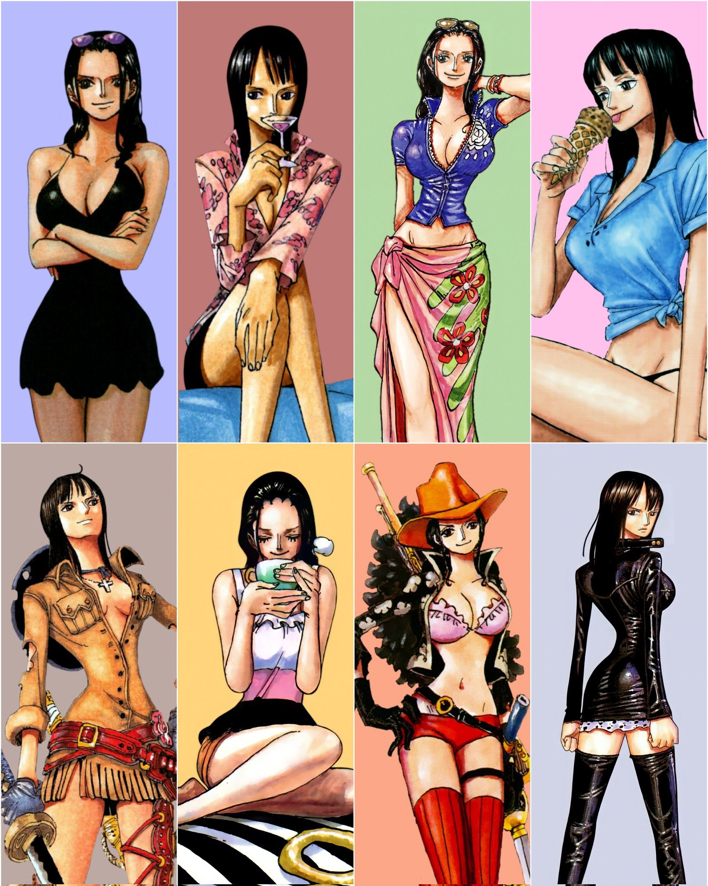
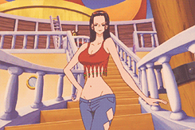
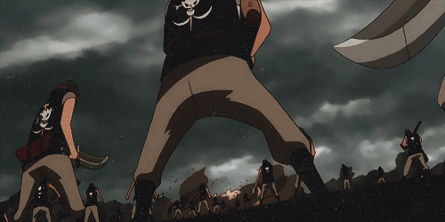
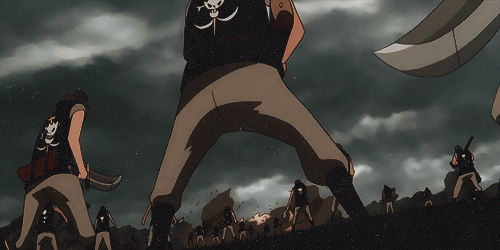
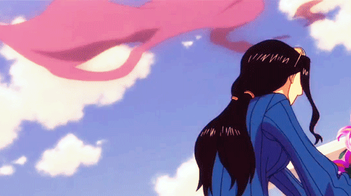
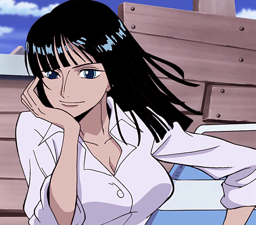

Em entrevista, Eiichiro Oda revelou que a cor primária de Nico Robin e todo seu material promocional é violeta. Diferentemente dos outros personagens principais, Robin não tem um traje inicial fixo. Apesar disso ela ficou marcada pela roupa de cowboy que vestia quando foi introduzida, consistindo em conjunto todo roxo de saia, camisa, faixa no braço esquerdo e chapéu. Seu cabelo preto ia até a altura dos ombros e era penteado com uma franja curta. Após um salto de dois anos na história, Robin retorna com cabelo longo e penteado para trás. Ela veste uma jaqueta de couro azul junto de uma grande saia rosa com bordado de plantas, além de usar óculos escuros.
Robin comeu a Hana-Hana no Mi, uma fruta do diabo do tipo paramecia que dá ao usuário a habilidade de duplicar e fazer brotar qualquer parte do próprio corpo onde a pessoa desejar, sejam superfícies ou até mesmo em outros seres vivos. Partículas em formato de pétalas rosas aparecem quando ela ativa seus poderes. Um dos golpes-padrão de Robin é a criação de várias mãos como forma de atacar ou agarrar seus adversários, muitas vezes torcendo suas costas ou pescoço. Ela tende a cruzar seus braços em um formato de "X" antes de realizar um ataque para se concentrar, mas tal ato não é obrigatório. Robin costuma atacar com braços e pernas mas também age furtivamente criando olhos e orelhas para adquirir informações em segredo. Ela controla tão bem os poderes de sua fruta que é capaz de juntar diversos braços para criar asas, redes, e membros maiores que o tamanho normal. Após treinar dois anos com o Exército Revolucionário, Robin evoluiu seus poderes para conjurar membros gigantescos e criar clones completos de si mesma. Ela revela ser capaz de brotar uma cópia gigante da parte superior de seu corpo e ainda adicionar elementos demoníacos como asas de morcego, chifres e presas para intimidação. Ela também aprendeu golpes marciais de Karatê dos Homens-Peixe. Seu ponto fraco é que qualquer dano feito nas partes extras é sentida no corpo real de Robin. Assim como todo usuário de Akuma no Mi, Robin é amaldiçoada pelo mar e não consegue nadar. Ela se enfraquece e afunda quando é submersa em água ou frente ao mineral Kairōseki, descrito como o mar em forma sólida.
 

Serena e tranquila, Robin é uma das personagens que menos tem explosões emocionais. Ela é muito paciente e sábia, quase sempre está lendo e estudando quando sua tripulação navega. Sua vida como forajida a fez ser reservada e calma até em momentos de tensão ou quando ela está ameaçando alguém. Robin costumava se manter distante e falar pouco em decorrência do trauma causado pelo genocídio de seu povo mas após passar tempo com seus novos companheiros e ser salva por eles, ela começou a se abrir mais. Além disso, o amor dos Chapéus de Palha fizeram com que ela não se enxergasse mais como uma existência que só provoca tragédias e sim como alguém digna de estar viva. Após finalmente aceitá-los ela começa a ser mais brincalhona e relaxada, o que é evidenciado por suas risadinhas. Robin tem um lado macabro em sua personalidade e frequentemente solta comentários mórbidos e brutos, o que deixa seus companheiros horrorizados. Em outras ocasiões ela demonstra entusiasmo por coisas com temática de terror. Tais situações costumam ocorrer de forma cômica. Apesar disso, ela também uma imaginação infantil e costuma processar situações e acontecimentos bizarros como pensamentos fofos e bobos que ela disfarça mantendo uma expressão séria. Ela inclusive tem um certo orgulho que a impede de fazer parte das brincadeiras embaraçosas dos seus tripulantes.
 